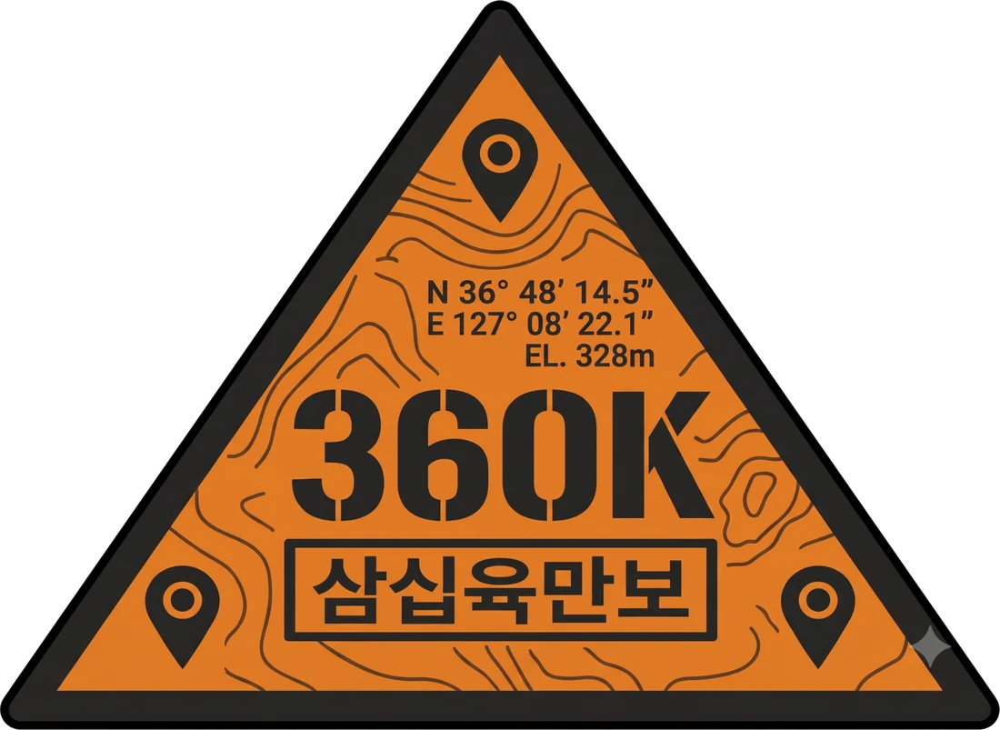

MISSION 001 · 완료
서울 to 천안
서울 to 천안
국토종주 프로젝트
광화문에서 천안역까지, 두 도시를 걸어서 이은 360K의 첫 번째 이야기. 가이드북과 크루 캐릭터, 엠블럼, 티셔츠 시안을 그대로 볼 수 있습니다.
- 코스
- 광화문 이순신 동상 — 천안역
- 일정
- 2026년 10월 30일 ~ 11월 1일
- 여정
- 약 100km · 2박 3일 도보 원정